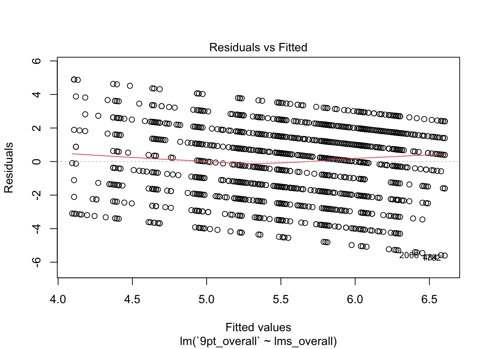
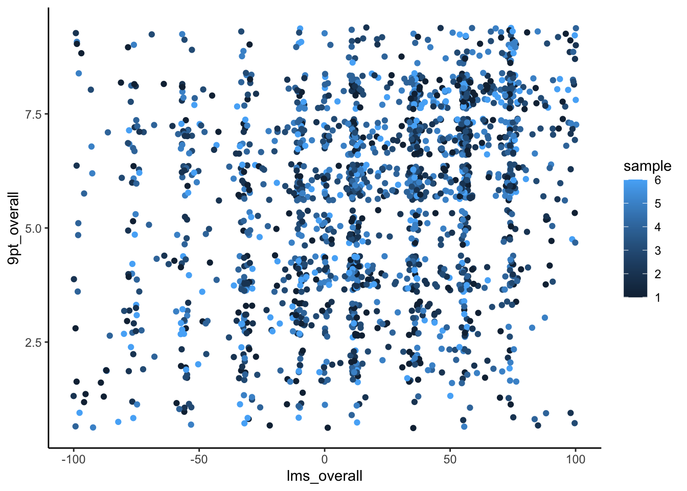
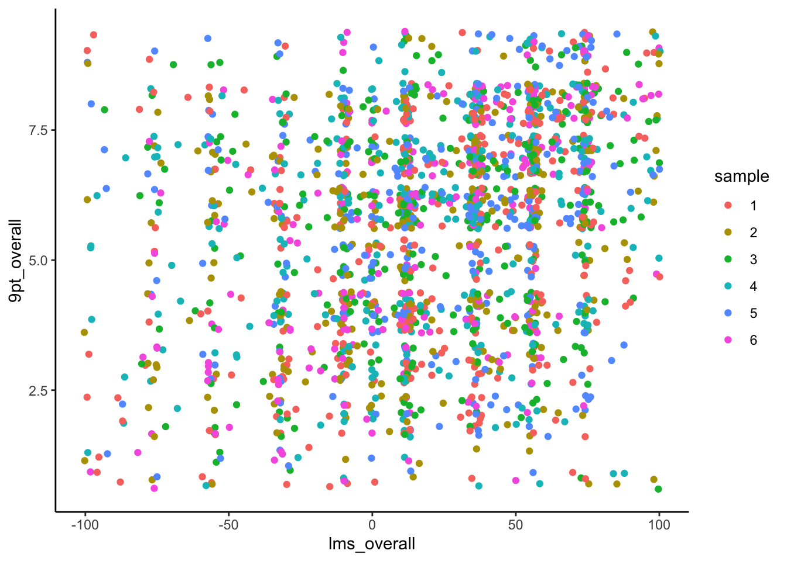
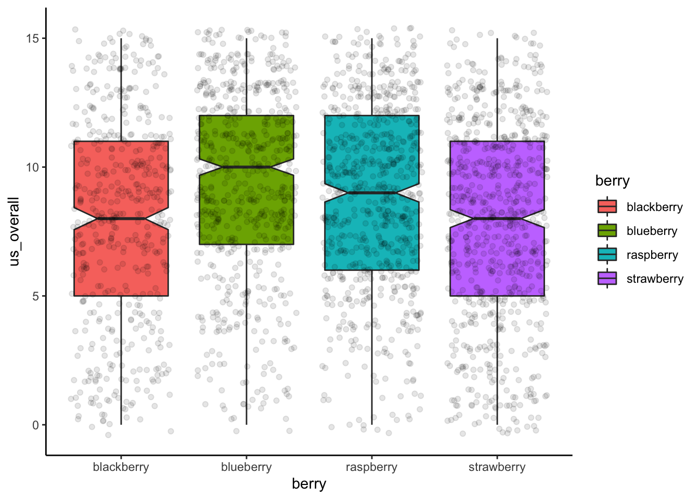
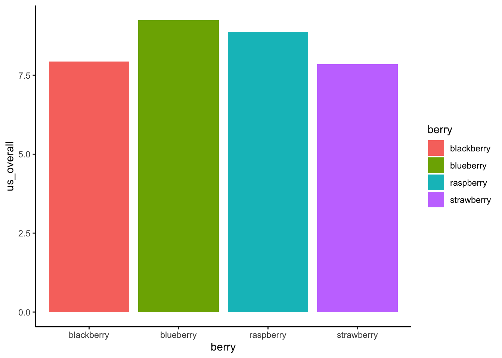
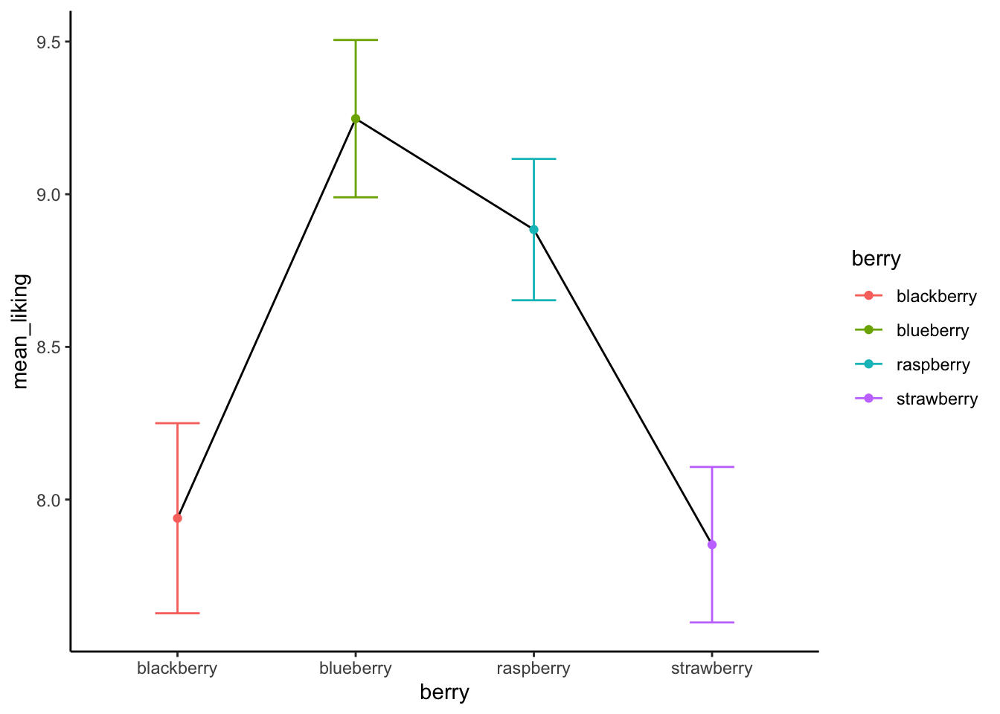
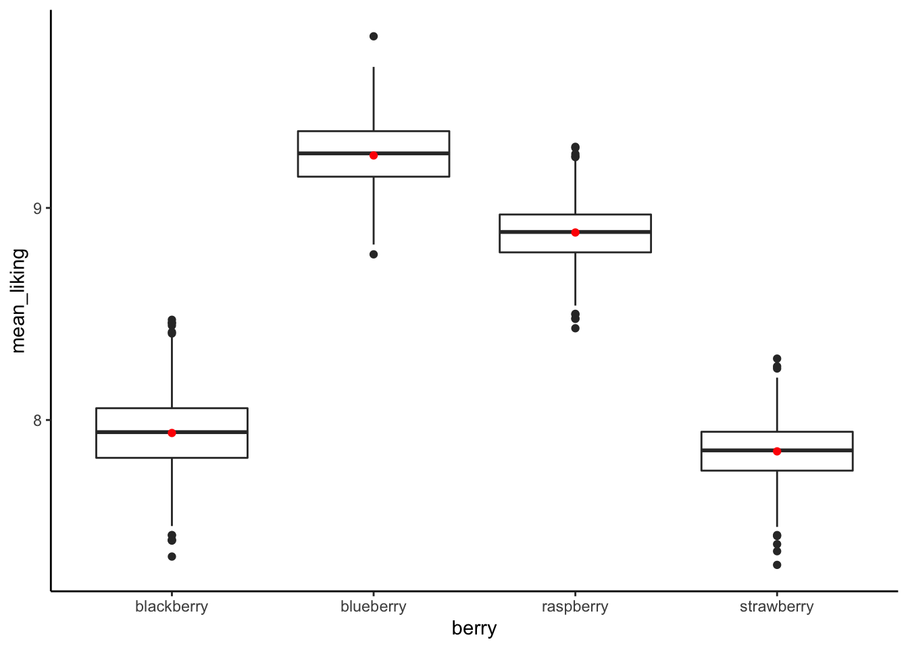

9 The linear model - regression and ANOVA
# Setup chunk is made visible for clarity
knitr::opts_chunk$set(message = FALSE, warning = FALSE)
library(tidyverse)
library(skimr)
library(naniar)
library(ggforce)
set.seed(11)
# Figure out a dataset we want to use here
berry_data <- read_csv("Files/Week 11/berry_data.csv")Last week we got a taste of statistical inference, along with a brief preview of Analysis of Variance. This week we’re going to review (because you learned these in statistics, right?) the concept of the linear model–very broadly–which encompasses both simple and multiple regression as well as one-way and multi-way ANOVA.
Today we’re going to start by talking about the general problem of predicting one continuous (interval or ratio) variable from another. This is the classical recipe for linear regression–we’ll talk about the lm() function in R, how to interpret results, and look into a bootstrapping approach for estimating stability of our estimates and a permutation approach that will help us see whether our results are significant.
We will spend some time looking at how to plot results from linear regression using a combination of geom_point()/geom_jitter() and geom_smooth(), as well as faceting. We’ll spend relatively little time on the assumptions we should really examine, but I’ll try to mention them.
Then we will spend a little while talking about a particularly vexing kind of variable type you may already have encountered in R: factor-type data. These data are key in both the analysis and the plotting of ANOVA.
Then we’ll look at a very closely related problem: how to predict a continuous (interval or ratio) variable from a discrete (interval or ordinal) predictor. This is the classic recipe for ANOVA, and we will look at the aov() function (a thin wrapper for the lm()) as well as pointing towards some other, more powerful packages (including the afex package). We’ll also revisit our permutation approach for ANOVA.
We will also spend some time on plotting results from ANOVA, with a special focus on interaction (mean-effect) plots. These plots give powerful visualizations of both the main effects (treatment effects) and interaction effects (differential effects of one treatment based on levels of another treatment).
We will not be looking in any detail at multiple regression or multiway ANOVA this week; that material will be introduced next week, when we will think more broadly about different methods for exploring how complex, interacting independent variables can be investigated in our models.
9.1 Dataset example for today
The data we’ll be working with today is from research I conducted with Driscoll’s, Inc. in 2019 (just months before the pandemic). It is a subset of data from a Central Location Test on berry liking, in which we asked subjects to rate their liking on different sets of berries (blackberries, blueberries, strawberries, raspberries) using different kinds of rating scales. Some of the results of the study were published in a paper by Yeung et al. (2021). If you’re really interested in the details you can find them there, as well as some examples of applied bootstrapping and permutation tests!
Today, however, we’re just interested in using the data to explore some applications of the linear model. Let’s take a look at our data:
berry_data %>% skim()| Name | Piped data |
| Number of rows | 3350 |
| Number of columns | 8 |
| _______________________ | |
| Column type frequency: | |
| character | 3 |
| numeric | 5 |
| ________________________ | |
| Group variables | None |
Variable type: character
| skim_variable | n_missing | complete_rate | min | max | empty | n_unique | whitespace |
|---|---|---|---|---|---|---|---|
| age | 270 | 0.92 | 5 | 5 | 0 | 3 | 0 |
| gender | 270 | 0.92 | 4 | 6 | 0 | 3 | 0 |
| berry | 0 | 1.00 | 9 | 10 | 0 | 4 | 0 |
Variable type: numeric
| skim_variable | n_missing | complete_rate | mean | sd | p0 | p25 | p50 | p75 | p100 | hist |
|---|---|---|---|---|---|---|---|---|---|---|
| subject | 0 | 1.00 | 1075965.50 | 136631.18 | 1031946 | 1032642 | 1033289 | 1034014 | 1522576 | ▇▁▁▁▁ |
| sample | 0 | 1.00 | 3.40 | 1.66 | 1 | 2 | 3 | 5 | 6 | ▇▃▃▃▃ |
| 9pt_overall | 905 | 0.73 | 5.68 | 2.10 | 1 | 4 | 6 | 7 | 9 | ▂▅▂▇▅ |
| us_overall | 790 | 0.76 | 8.49 | 3.81 | 0 | 6 | 9 | 11 | 15 | ▃▅▇▇▅ |
| lms_overall | 848 | 0.75 | 20.24 | 43.74 | -100 | -9 | 26 | 56 | 100 | ▁▃▆▇▃ |
This data is semi-tidy: each row has 3 observations on it: the rating of the berry by the particular subject in terms of the 9-pt hedonic scale (9pt_overall), the Labeled Magnitude Scale (lms_overall) and the Unstructured Line Scale (us_overall). The first of these 3 scales produces ordinal data that is often treated as interval-level, and the latter two are reputed to produce interval-level data (again, see Yeung et al. (2021) for details on some of these assumptions and their validity in this dataset).
You’ll notice we have some missing data in our dataset. We can take a closer look at this using the naniar package (which is great for dealing with the common situation of missing data):
berry_data %>%
vis_miss(cluster = TRUE)
It looks like we have some big chunks of missing data (because of the way the data were collected: subjects did not have to attend every session). This is not a situation made-up for your benefit, just a characteristic of these data!
We are going to use these data to investigate the relationships among the scales, as well as predicting liking outcomes from categorical variables like age-category and gender.
9.2 Review of measurement levels
Typically, we talk about four “levels of measurement” in regards to data that dictate what kinds of analysis we should conduct (although we can do whatever we want, with sometimes disastrous results):

Classical levels of measurement are nominal, ordinal, interval, and ratio
The borders between these categories is not as hard and fast as we’d wish. For example, the famous 9-pt hedonic scale (well, famous in my discipline!) is really an ordinal response scale:

Some scales used in sensory evaluation including the 9-pt hedonic scale
We can have different kinds of variables in all different roles in our datasets. For example, in this dataset we have both nominal and ordinal predictors (independent or experimental variables):
- Berry type (nominal)
- Gender (nominal)
- Age (ordinal)
- Berry sample ID (nominal, even though it is listed as an integer)
- Subject ID (nominal, even though given as numeric)
We also have ordinal and interval-level outcomes (dependent or measured variables):
- 9-pt scale (ordinal, treated as interval)
- Labeled Affective Magnitude Scale (interval, although often claimed to be ratio)
- Visual Analog Scale (interval)
Technically, the choice of what statistical model we can fit to our data depends on the types of data we have! Frequently, we will violate the rules, but knowing that they exist will let us understand what risks we are taking.
With that, let’s talk about one of the most frequent situations we encounter in research: predicting the value of one interval/ratio-level variable from another. This is linear regression.
9.3 Linear regression
Let’s begin by taking a quick look at the correlations among the various forms of measured liking for our berry_data:
berry_data %>%
select(contains("overall")) %>%
cor(use = "pairwise.complete.obs")## 9pt_overall us_overall lms_overall
## 9pt_overall 1.0000000 0.2550950 0.2573497
## us_overall 0.2550950 1.0000000 0.2687089
## lms_overall 0.2573497 0.2687089 1.0000000berry_data %>%
select(contains("overall")) %>%
ggplot() +
geom_smooth(aes(x = .panel_x, y = .panel_y), method = "lm", color = "red") +
geom_jitter(aes(x = .panel_x, y = .panel_y), alpha = 0.1) +
facet_matrix(vars(1:3)) +
theme_classic()
We can see that while there are positive relationships among our variables, they are not as strongly correlated as we might assume for instruments that putatively measure the same underlying construct (overall liking). This is going to be our justification for exploring linear regression with what otherwise seems like it would be a kind of silly example.
We already learned that correlation (usually represented with the symbols \(r\) or \(\rho\)) represents the strength of linear association between two numeric variables. Correlations fall into the range \([-1, 1]\):
- \(-1\) indicates perfect anticorrelation: when \(x\) goes up, \(y\) goes down
- \(0\) indicates no relationship between the variables
- \(1\) indicates perfect correlation: when \(x\) goes up, \(y\) goes up
However, while correlation can give us an idea of the strength of a relationship, it doesn’t quantify the relationship. Informally (as I do most things in this class, because I’m not a statistician!), this is exactly what linear regression does: in its simple form, linear regression quantifies the relationship between \(x\) and \(y\) whose strength is represented by the correlation \(r\).
9.3.1 Bivariate (2-variable) relationships imply a third variable
Before we begin to explore these models, a quick aside: these kinds of bivariate relationships always imply a third, implicit variable: the pairing variable, which is often give as \(i\), as in the index for pairs of variables: \((x_1, y_1), (x_2, y_2), ..., (x_i, y_i)\). This seems like something trivial to point out, but it is actually important and can be kind of puzzle.
For example, this is the problem with apparent (false) historical correlations:

Tight association between shark attacks and ice-cream consumption, from Statology.
The real, underlying relationship is between shark attacks and time, and between ice-cream consumption and time, but timepoint is being used as the pairing variable and so it creates a false correlation between the two other variables.
We often assume that our underlying pairing variable, \(i\), is a meaningless index, but it can often have consequences for our data. It is always worth at least explicitly stating how our data is structured to help us understand these (and other) kinds of errors we might encounter.
9.3.2 Simple linear regression
With that all in mind, let’s state that the overall goal of linear regression is to obtain an estimate of the effect of one (usually continuous or interval/ratio) variable, \(x\), on the value of another (continuous) variable, \(y\). In order to estimate this relationship, we need some set of paired \(\{(x_i, y_i)\}\) so that we can estimate the relationship. We typically write this relationship as:
In plain English, we are saying that from each observed \(x_i\), we generate an estimate for \(y_i\), which we write as \(\hat{y}_i\), meaning it is an estimate that contains error, by multiplying \(x_i\) by some quantity \(\beta\) and adding a constant quantity \(\alpha\). Typically, we calculate both \(\alpha\) and \(\beta\) through Ordinary Least Squares, which gives us an exact numerical solution in order to minimize the quantity \(\sum{(y_i-\hat{y}_i)^2}\), which is the difference between our estimated and observed values.
I will not be deriving this method at all in this class.
I had to memorize the derivation (based in linear algebra) once, and I have mostly forgotten it. It is not too tricky, and it is interesting for the right sort of person, but it isn’t super pertinent to our everyday job of analyzing data as scientists. Instead, we’re going to take a look at how to run linear regression in R, how to interpret and plot the output, and some basic considerations.
The command for the linear model in R (which includes both regression and ANOVA) is lm(). With our data, we can write the following:
berry_lm <- lm(`9pt_overall` ~ lms_overall, data = berry_data) # note that this is not a pipe-friendly function, need to use "data = ."
berry_lm##
## Call:
## lm(formula = `9pt_overall` ~ lms_overall, data = berry_data)
##
## Coefficients:
## (Intercept) lms_overall
## 5.34898 0.01254class(berry_lm)## [1] "lm"typeof(berry_lm)## [1] "list"Notice that when we print berry_lm we just get a simple couple lines to the console: a list of the “function call” which tells us the model we fit, and estimates for the coefficients. In this case, we have only an (Intercept) coefficient, which is our \(\alpha\), and an lms_overall coefficient, which is our \(\beta\).
This doesn’t provide us with any information on whether this model is a good model. In order to get that information, we are going to do two things: examine a summary table of the output and make some visual plots to explore the model.
# We can get a pretty informative summary of our lm objects by using summary()
summary(berry_lm)##
## Call:
## lm(formula = `9pt_overall` ~ lms_overall, data = berry_data)
##
## Residuals:
## Min 1Q Median 3Q Max
## -5.6032 -1.5622 0.3626 1.6510 4.8927
##
## Coefficients:
## Estimate Std. Error t value Pr(>|t|)
## (Intercept) 5.348976 0.051718 103.43 <2e-16 ***
## lms_overall 0.012542 0.001082 11.59 <2e-16 ***
## ---
## Signif. codes: 0 '***' 0.001 '**' 0.01 '*' 0.05 '.' 0.1 ' ' 1
##
## Residual standard error: 2.041 on 1893 degrees of freedom
## (1455 observations deleted due to missingness)
## Multiple R-squared: 0.06623, Adjusted R-squared: 0.06574
## F-statistic: 134.3 on 1 and 1893 DF, p-value: < 2.2e-16This gives us the same information and more! We can see, for example, that a t-test run on the lms_overall \(\beta\) coefficient is apparently “significant” (more on this later), and we also can learn that despite this our model is pretty awful: the \(R^2\), which estimates for us how much variability in \(y\) is explained by our model and in simple regression is literally the squared correlation coefficient (\(r^2\)), is very low! Even though our model is a significant fit, we really aren’t explaining much at all about the variability of the results.
Why is this? Let’s take a look at our actual data:
berry_data %>%
ggplot(aes(x = lms_overall, y = `9pt_overall`)) +
geom_jitter() +
geom_smooth(method = 'lm') + # geom_smooth adds a fitted model estimate to the plot
theme_classic()
We can see that, while there is indeed an underlying positive trend, it is quite weak: we have a lot of low values of 9pt_overall for high values of lms_overall, and vice versa.
We can use extractor functions to get some more useful information from our model to help us understand what’s going on. We use coefficients() to get the coefficients of the model (\(\alpha\) and \(\beta\) in this case) if we want to use them somewhere else (for example in bootstrapping, see below).
coefficients(berry_lm)## (Intercept) lms_overall
## 5.34897610 0.01254223We can extract predicted values for the model using the predict() function. We can also use this function to predict values for new \(x\) values which we want to estimate our expected \(y\) values for by providing them in the newdata = argument (as a vector). We can also get fitted (predicted) \(\hat{y}\) values using the fitted() function.
predicted_y <- predict(berry_lm) %>%
as_tibble(rownames = "observation")We can use this to take a look at our model’s effectiveness visually. We’re going to
- Select the observed
9pt_overallvalues from our data - Get the predicted observations from our model
- Join them into a single data table
- Plot them against each other
If the resulting plot is close to a diagonal line, we’ll know that our model is performing well, because ideally we want the error (\(y_i-\hat{y}_i\)) to be very small!
predicted_y %>%
# we create a new observation variable to filter our left_join
left_join(berry_data %>% mutate(observation = as.character(row_number()))) %>%
ggplot(aes(x = value, y = `9pt_overall`)) +
geom_jitter() +
geom_smooth(method = "lm", color = "red") +
theme_classic() +
labs(x = "Predicted value", y = "Observed value")
Unfortunately, it is clear that our model really doesn’t do much to predict the variation in our outcome variable. Equivalently, there is only a weak relationship between our predicted \(\hat{y}_i\) values and our actual \(y_i\) values.
This is just one of the interesting things we found out in this study!
9.3.2.1 Bonus: what’s the underlying (implied) variable(s) in this model?
After spending a little bit of time on thinking about implicit links caused by the indexing variable, we immediately skimmed over what \(i\) means in this study Looking back at our skim(), what variable(s) links the observations of 9pt_overall and lms_overall?
# Give your answers here!9.3.2.2 A resampling approach to estimating quality of regression
Given how bad our model explanation is, and how little effect lms_overall seems to have (we could read our model as saying that our estimated 9pt_overall score increases by 0.013 points for every 1 point increase in lms_overall), it is curious that we are so certain that our observed effect is significant. What does this mean?
First, we might want to ask about the stability of our estimate. We can use this via bootstrapping, just as we did for means and variances in the last class.
bootstrapped_betas <- numeric(1000)
for(i in 1:1000){
# Resample our data with replacement
bootstrap_data <- berry_data[sample(1:nrow(berry_data), replace = TRUE), ]
# run the same model on the new sample
bootstrap_model <- lm(`9pt_overall` ~ lms_overall, data = bootstrap_data)
# Get the lms_overall (beta) coefficient
bootstrapped_betas[i] <- coefficients(bootstrap_model)[2]
}
# Now we can plot the distribution of these beta coefficients and compare them to our observed coefficient
bootstrapped_betas %>%
as_tibble() %>%
ggplot(aes(x = value)) +
geom_histogram(bins = 20, fill = "grey", color = "black") +
geom_point(aes(x = coefficients(berry_lm)[2], y = 0), color = "red") +
theme_classic() 
quantile(bootstrapped_betas, c(0.05, 0.95))## 5% 95%
## 0.01060681 0.01449443There is an almost 40% difference between our bootstrapped confidence-interval’s upper and lower bounds, which is not super tight. We could also use a permutation approach to consider the significance of our estimate. When we break the implied pairing between our two variables (disrupt the \(i\) variable), what do we learn? Unlike our last example, in which we considered complete permutations, here we are also going to do an estimated or “bootstrapped permutation” test. We will only run 1000 of the almost infinitely large possible reorderings of the \(i\) variable:
permuted_betas <- numeric(1000)
for(i in 1:1000){
# Scramble our data (not just resample)
permuted_data <- tibble(`9pt_overall` = sample(berry_data$`9pt_overall`, replace = FALSE),
lms_overall = berry_data$lms_overall)
# run the same model on the new sample
bootstrap_model <- lm(`9pt_overall` ~ lms_overall, data = permuted_data)
# Get the lms_overall (beta) coefficient
permuted_betas[i] <- coefficients(bootstrap_model)[2]
}
permuted_betas %>%
as_tibble() %>%
ggplot(aes(x = value)) +
geom_histogram(bins = 20, fill = "grey", color = "black") +
geom_point(aes(x = coefficients(berry_lm)[2], y = 0), color = "red") +
theme_classic() +
labs(x = "Permuted beta coefficient", y = "count")
Happily, it does appear that the relationship, while weak, is indeed stronger than we’d expect to observe if there were no relationship between our subjects’ reported liking on 2 scales! That’s a relief.
9.3.3 Checking your model
We’ve spent a little bit of time talking about how to interpret a model and how to investigate whether it is telling us anything useful. But an important facet of using any statistical model (that I am barely going to touch on) is investigating the fit of the model. The lm() function tries to help you out with this: by using plot() on an lm object, you can see a set of plots that give you information about model fit.
plot(berry_lm)


Each of these plots gives you information about how well the model fits. In this set, I tend to look most at the first two plots: the fitted values against the residuals and the QQ-plot of theoretical quantiles vs standardized residuals.
- The first plot tells us whether there is a systematic pattern in (mis)-fitting our data. The question is whether the model fits worse (bigger absolute residuals) at some set of fitted values than at others. It does appear that there is a systematic relationship between fitted values and residuals (\(y_i - \hat{y_i}\)), which tells us that this model is not unbiased: it will tend to predict more extreme values at either end of the range of our predicted values.
- The second plot tells us something about the normality of our data. It orders the residuals from lowest to highest, and then assigns them to quantiles of the normal distribution. Then, it plots those assigned quantiles against the actual normalized residuals. In a well-fitting model, the residuals should cling pretty close to a straight line–in our model, we see the same systematic deviation at both low and high levels (in this case represented as quantiles). This is an indicator of non-normality in our data, which in turn means our estimates are probably bad.
The last 2 plots give more technical information about the model fit (and look wild for this model), and I will not go into them here.
Beyond these simple plots, there are many important different ways to assess a model. But we will not go into them here, because we start to get into statistical assumptions, and I think you should learn about these methods from someone who is more expert in them. My goal is to equip you with the tools to manipulate data and execute these analyses, and interpretation is best left to the domain experts!
9.4 A note about causality
We are all familiar with the phrase “correlation does not imply causation”. But why do we say this so frequently?

XKCD can’t say for certain whether statistics classes work.
Without getting too into the weeds (save that for Week 14!), we know a few things that should make us cautious!
- Correlation is symmetrical:
cor(x, y) == cor(y, x). So we can’t say anything about what is causing what! - Correlation is a binary relationship: we only look at
cor(x, y), so if \(z\) is causing both \(x\) and \(y\), we will see a strong correlation but won’t know why. - Human brains seem to be simultaneous pattern-recognition and hypothesis-generation machines. So when we see associations (like correlations) we immediately make up plausible theories for them. We need to be cautious about our intuitions in the presence of these kinds of data explorations!
9.5 A coding digression: factor
So far we have talked about using one continuous variable to explain/predict variation in another continuous variable. Often, however, we will have categorical variables whose effect on some outcome variable \(y\) we want to explore. In this case, we are going to end up working with a king of R data type we haven’t really explore yet: factor.
I always recommend reading in the weekly assignment, but I am going to call it out here as well to remind you to check these out: the R4DS chapter on factors (Wickham and Grolemund 2017) is probably the best resource for this class. The links at the “Learning More” section of that chapter are great resources for those of you interested in the programming history of R
The short story behind the existence of factors is that they are memory- and computationally-efficient ways to deal with limited sets of (possible non-numeric) labels, which to us are strings like "male", "female", "red“, etc. In early R history it was not really necessary to deal with strings much, and so it was easier to largely treat them as labels for underlying integers. This is something we all do frequently in our own data-management without thinking about: think about how in an Excel lab notebook we fill the cells in a column like”Income level” by writing a value like “2”, which represents something like “$20-$30,000/year”. This is the idea behind how R treats factor data.
A factor data type is a set of (small) integers with an attribute tag of levels that correspond to those labels. We’re going to examine this in the context of the berry_data.
berry_types <- berry_data$berry
unique(berry_types) # we don't want to print all 3000+ duplicates## [1] "raspberry" "blackberry" "blueberry" "strawberry"class(berry_types)## [1] "character"typeof(berry_types)## [1] "character"It is clear that we could do some kind of transformation where we tell R that 1 = "raspberry", etc to make integer labels for our berry types, and then R would only have to deal with numbers and a map that tells it which number corresponds to each unique character string in berry_types. This is what a factor does.
In the language of factor, the label values are called levels.
berry_levels <- unique(berry_types)
berry_factor <- factor(berry_types, levels = berry_levels)
str(berry_factor)## Factor w/ 4 levels "raspberry","blackberry",..: 1 1 1 1 1 1 1 1 1 1 ...typeof(berry_factor)## [1] "integer"class(berry_factor)## [1] "factor"attributes(berry_factor)## $levels
## [1] "raspberry" "blackberry" "blueberry" "strawberry"
##
## $class
## [1] "factor"We can get the levels back out of a factor by using levels()
levels(berry_factor)## [1] "raspberry" "blackberry" "blueberry" "strawberry"When we try to add a non-included level to a factor, R automatically coerces it to an NA.
factor(c("raspberry", "blueberry", "cherry"), levels = berry_levels)## [1] raspberry blueberry <NA>
## Levels: raspberry blackberry blueberry strawberryThus, a factor is R’s way of creating a map between (computationally expensive) strings and inexpensive, easy to manipulate integers. Many modern (tidyverse-type) functions no longer use factors as extensively, but a lot of base R functions do use them (in particular the aov() and lm() functions we are using a lot today). They either will request factors or convert strings to factors in the background silently.
Another place that factors can be quite useful is in ggplot2. If we have an integer label (like sample in berry_data, which represents a sample #), by default it will be treated as numeric:
berry_data %>%
ggplot(aes(x = lms_overall, y = `9pt_overall`, color = sample)) +
geom_jitter() +
theme_classic()
Notice the gradient assigned to the color mapping for sample. If we tell R that sample is a factor (by using the as.factor() coercion function), ggplot() will recognize this and give us a much more useful (discrete) color mapping:
berry_data %>%
mutate(sample = as.factor(sample)) %>%
ggplot(aes(x = lms_overall, y = `9pt_overall`, color = sample)) +
geom_jitter() +
theme_classic()
Now that you’ve been introduced to factor data, you may have questions about, for example, how to add or subtract levels to a factor, or how to reorder those levels. Please consult the R4DS chapter on factors (Wickham and Grolemund 2017) to learn more–it is easy but slightly fiddly. And now, if you encounter weird effects in your treatment of string data, you’ll know why!
9.6 Analysis of variance (ANOVA)
Now that we’ve introduced a new type of data in R, let’s justify it’s use! Often, we want to explain the variation in a (continuous) \(y\) variable by the effect of a categorical \(x\) variable–in base R like lm() these are usually treated (or coerced to) factor data. Happily, unless we want to make changes to levels, we can let R handle this behind the scenes.
When we have some \(x\) variable that can only take on a set of discrete values, this is a categorical predictor, and our linear regression becomes instead Analysis of Variance: ANOVA. In ANOVA, we are interested in the effect of category membership \(\{x_1, x_2, ..., x_n\}\) on our predicted outcome variable \(y\). Instead of our classic regression linear equation, we tend to write ANOVA something like the following:
We are familiar with the LHS of this equation–our estimate for a particular, observed \(y_i\) is indicated as \(\hat{y}_i\). The RHS looks a bit different: it is read as “the grand mean” (\(\mu\)) “plus the group mean of the level of \(x_i\)” (which is written here as \(\tau_k\), because we often talk about these as treatment means).
This bit of mathiness can be rephrased intuitively as “our estimate of a particular \(y\)-value is the sum of the average of \(y\) plus the average effect of the treatment variable \(x\)”. Even though this sounds like a different problem, it’s actually our same equation from linear regression reframed for a situation in which \(x\) can only take on a delimited set of values. We have an example(s) of this in our berry_data set that will give us some context in this question.
9.6.1 One-way ANOVA
In its simplest form, ANOVA is used to relate a single outcome \(y\) and a single predictor \(x\). We still have the implicit \(i\) variable that links our pairs of observations \((x_i, y_i)\), but now \(x_i \in \{x_1, x_2, ..., x_n\}\)–it does not have an unlimted number of values it can take on, as it does in standard linear regression. Thus, our \(\beta\) from linear regression is replaced by a set of \(\tau_k\) values that represent the average effect for each possible group \(x_i\) can be in. But we could as easily write \(\beta_k\)–the meaning is the same. It is just convention.
In berry_data, berry is a categorical variable that represents berry type: it can be one of four values.
unique(berry_data$berry)## [1] "raspberry" "blackberry" "blueberry" "strawberry"Let’s model us_overall (scaled overall liking) on berry. This model asks: does the type of berry predict or explain a significant amount of liking? Can we say something about probable liking level if we know what type of berry the subject is tasting?
berry_aov <- berry_data %>%
lm(us_overall ~ berry, data = .)
berry_aov##
## Call:
## lm(formula = us_overall ~ berry, data = .)
##
## Coefficients:
## (Intercept) berryblueberry berryraspberry berrystrawberry
## 7.93878 1.30880 0.94541 -0.08662summary(berry_aov)##
## Call:
## lm(formula = us_overall ~ berry, data = .)
##
## Residuals:
## Min 1Q Median 3Q Max
## -9.2476 -2.8522 0.1478 3.0612 7.1478
##
## Coefficients:
## Estimate Std. Error t value Pr(>|t|)
## (Intercept) 7.93878 0.17031 46.614 < 2e-16 ***
## berryblueberry 1.30880 0.22804 5.739 1.06e-08 ***
## berryraspberry 0.94541 0.22154 4.267 2.05e-05 ***
## berrystrawberry -0.08662 0.21934 -0.395 0.693
## ---
## Signif. codes: 0 '***' 0.001 '**' 0.01 '*' 0.05 '.' 0.1 ' ' 1
##
## Residual standard error: 3.77 on 2556 degrees of freedom
## (790 observations deleted due to missingness)
## Multiple R-squared: 0.0246, Adjusted R-squared: 0.02346
## F-statistic: 21.49 on 3 and 2556 DF, p-value: 9.602e-14Notice we can just use our standard lm() function, even though our \(x\) variable, berry, is categorical. The model object and summary() for berry_aov has coefficients for 3/4 berry types–this is because R is converting berry to a factor in the background, which makes blackberry the first level (it is alphabetically first), and so the coefficients in the model are the values for a change from blackberry (the average liking for which is in the (Intercept) term). So blueberry is liked on average almost 1.31 pts on the line scale more than blackberry, whereas strawberry is liked slightly less on average by about 0.09 pts on the line scale. We also see our typical t-test estimates for significance for each level, but these are a bit harder to interpret for this model because these are actually each the same \(x\) variable.
Therefore, we might want to use the anova() function, which is a version of summary() specific for ANOVA.
anova(berry_aov)## Analysis of Variance Table
##
## Response: us_overall
## Df Sum Sq Mean Sq F value Pr(>F)
## berry 3 916 305.423 21.489 9.602e-14 ***
## Residuals 2556 36328 14.213
## ---
## Signif. codes: 0 '***' 0.001 '**' 0.01 '*' 0.05 '.' 0.1 ' ' 1This tells us that the \(x\) variable berry is overall significant, but doesn’t tell us about specific factor levels. We can get to this from the very start by using the aov() function, which is a version of lm() for ANOVA:
berry_aov_2 <- berry_data %>%
aov(us_overall ~ berry, data = .) # here
berry_aov_2## Call:
## aov(formula = us_overall ~ berry, data = .)
##
## Terms:
## berry Residuals
## Sum of Squares 916.27 36327.52
## Deg. of Freedom 3 2556
##
## Residual standard error: 3.769966
## Estimated effects may be unbalanced
## 790 observations deleted due to missingnesssummary(berry_aov_2)## Df Sum Sq Mean Sq F value Pr(>F)
## berry 3 916 305.42 21.49 9.6e-14 ***
## Residuals 2556 36328 14.21
## ---
## Signif. codes: 0 '***' 0.001 '**' 0.01 '*' 0.05 '.' 0.1 ' ' 1
## 790 observations deleted due to missingnessThe proper way to report this kind of model is “there was a significant effect of berry type on overall liking as measured by an unstructured line scale”.
9.6.2 Posthoc testing
In ANOVA, we typically are interested in whether there are significant differences among our treatment levels: sure, we have estimates for \(\tau_{strawberry}\), \(\tau_{raspberry}\), etc, but are they actually different from each other?
To answer these questions, we often use what are called posthoc tests, which have names like “Fisher’s Least Significant Difference” (Fisher’s LSD) or “Tukey’s Honestly Significant Difference” (Tukey’s HSD). I think the easiest way to calculate these are from the agricolae package.
library(agricolae)
LSD.test(y = berry_aov_2, trt = "berry", console = TRUE)##
## Study: berry_aov_2 ~ "berry"
##
## LSD t Test for us_overall
##
## Mean Square Error: 14.21265
##
## berry, means and individual ( 95 %) CI
##
## us_overall std r LCL UCL Min Max
## blackberry 7.938776 4.058913 490 7.604816 8.272735 0 15
## blueberry 9.247573 3.679441 618 8.950203 9.544943 0 15
## raspberry 8.884181 3.540931 708 8.606354 9.162008 0 15
## strawberry 7.852151 3.857093 744 7.581128 8.123173 0 15
##
## Alpha: 0.05 ; DF Error: 2556
## Critical Value of t: 1.960893
##
## Groups according to probability of means differences and alpha level( 0.05 )
##
## Treatments with the same letter are not significantly different.
##
## us_overall groups
## blueberry 9.247573 a
## raspberry 8.884181 a
## blackberry 7.938776 b
## strawberry 7.852151 bHSD.test(y = berry_aov_2, trt = "berry", console = TRUE)##
## Study: berry_aov_2 ~ "berry"
##
## HSD Test for us_overall
##
## Mean Square Error: 14.21265
##
## berry, means
##
## us_overall std r Min Max
## blackberry 7.938776 4.058913 490 0 15
## blueberry 9.247573 3.679441 618 0 15
## raspberry 8.884181 3.540931 708 0 15
## strawberry 7.852151 3.857093 744 0 15
##
## Alpha: 0.05 ; DF Error: 2556
## Critical Value of Studentized Range: 3.63555
##
## Groups according to probability of means differences and alpha level( 0.05 )
##
## Treatments with the same letter are not significantly different.
##
## us_overall groups
## blueberry 9.247573 a
## raspberry 8.884181 a
## blackberry 7.938776 b
## strawberry 7.852151 bThe key output of these kinds of tests are the “letters”–the groups labeled with the same letter are close enough to each other based on the test’s criteria to be considered not significantly different.
All of these methods have various responses to the problem of familywise error: when we run multiple tests on the same set of data, we are increasing our chance of finding a relationship that is just coincidental. This is often referred to as “p-hacking” or “significance mining”. We will return to this issue in Week 14, but this XKCD actually very aptly sums up the problem:

Watch out for those green jellybeans!
I will say this: do not use Fisher’s LSD. It is frequently used in published papers, and it is very very prone to this kind of error. While there is no perfect approach, Tukey’s HSD (and other methods) are less likely to give this kind of false positive.
9.6.3 Plotting ANOVA results
Because ANOVA is based on categorical data, it doesn’t look very good to plot that data in scatterplots. Generally, boxplots or barplots will be the most effective visual representation of data from ANOVA. The following visualizations were adapted to some degree from Philipp Masur’s blog:
berry_data %>%
ggplot(aes(x = berry, y = us_overall)) +
geom_boxplot(aes(fill = berry), notch = TRUE) +
geom_jitter(alpha = 0.1) +
theme_classic()
berry_data %>%
ggplot(aes(x = berry, y = us_overall)) +
stat_summary(aes(fill = berry), fun.y = mean, geom = "bar") +
stat_summary(fun.data = mean_cl_boot, geom = "errorbar", width = 0.25) +
theme_classic()
Another classic plot for ANOVA that will become even more powerful when we begin to examine multiway analyses is the interaction plot, which is really a dot + line plot representing the same data as the bar plot:
berry_data %>%
# We will make our own summary table rather than do transformations in ggplot
group_by(berry) %>%
summarize(mean_liking = mean(us_overall, na.rm = TRUE),
se_liking = sd(us_overall, na.rm = TRUE)/sqrt(n())) %>%
ggplot(aes(x = berry, y = mean_liking, color = berry, group = berry)) +
geom_line(aes(group = 1), color = "black") +
geom_point(aes(y = mean_liking)) +
geom_errorbar(aes(ymin = mean_liking - 2 * se_liking, ymax = mean_liking + 2 * se_liking), width = 0.25) +
theme_classic()
9.6.4 Resampling approaches to ANOVA
We actually learned about resampling approaches to ANOVA in last class, but let’s take a quick look at how we can modify our regression approach to get a better alternative to our posthoc tests.
bootstrapped_means <- tibble(berry = character(),
mean_liking = numeric(),
boot_id = numeric())
for(i in 1:1000){
berry_data %>%
group_by(berry) %>%
# The following line resamples to get the same size of data frame with replacement
slice_sample(prop = 1, replace = TRUE) %>%
summarize(mean_liking = mean(us_overall, na.rm = TRUE)) %>%
mutate(boot_id = i) %>%
bind_rows(bootstrapped_means, .) ->
bootstrapped_means
}
bootstrapped_means %>%
ggplot(aes(x = berry, y = mean_liking)) +
geom_boxplot() +
geom_point(data = berry_data %>%
group_by(berry) %>%
summarize(mean_liking = mean(us_overall, na.rm = TRUE)),
color = "red") +
theme_classic()
bootstrapped_means %>%
group_by(berry) %>%
summarize(`5%` = quantile(mean_liking, 0.05),
mean = mean(mean_liking),
`95%` = quantile(mean_liking, 0.95))## # A tibble: 4 × 4
## berry `5%` mean `95%`
## <chr> <dbl> <dbl> <dbl>
## 1 blackberry 7.66 7.94 8.24
## 2 blueberry 9.00 9.25 9.49
## 3 raspberry 8.66 8.88 9.10
## 4 strawberry 7.62 7.85 8.079.7 Incorporating multiple predictors
As a tease of our material for next week, we can always include multiple predictors in linear regression and ANOVA. This lets us simultaneously estimate the effect of multiple predictors on some outcome. So, just for fun, let’s estimate the effect of berry type and subject age on over all berry liking.
berry_data %>%
aov(us_overall ~ berry * age, data = .) %>%
summary()## Df Sum Sq Mean Sq F value Pr(>F)
## berry 3 849 283.10 19.970 8.78e-13 ***
## age 2 188 93.77 6.615 0.00137 **
## berry:age 6 51 8.52 0.601 0.72949
## Residuals 2388 33852 14.18
## ---
## Signif. codes: 0 '***' 0.001 '**' 0.01 '*' 0.05 '.' 0.1 ' ' 1
## 950 observations deleted due to missingnessWe can see that there is an overall effect of berry that remains even when the significant effect of age is also in the model. There doesn’t appear to be an interactive effect of berry and age, as shown by the third line for berry:age. We’ll talk about this in more detail tomorrow, but this plot should give an idea of what that means:
berry_data %>%
ggplot(aes(x = age, y = us_overall, color = berry)) +
geom_boxplot(notch = TRUE) +
theme_classic()
Often, when model multiple regression and ANOVA, we are not only interested in predicting \(y\), but in determining which different \(x\)s matter. This is the topic we will explore next week!